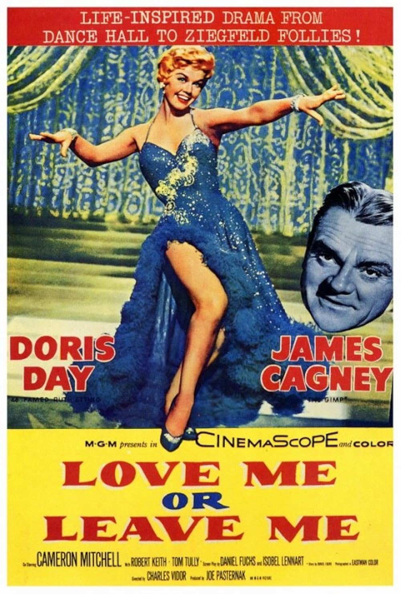

Love Me or Leave Me
28th Academy Awards
(Oscars 1956)
6 Nominations, 1 Award
| Nominations | ||
|---|---|---|
| Category | Nominees | Result |
| Actor | James Cagney | Nominated |
| Writing (Motion Picture Story) | Daniel Fuchs | Won |
| Writing (Screenplay) | Daniel Fuchs and Isobel Lennart | Nominated |
| Sound Recording | Wesley C. Miller | Nominated |
| Music (Scoring of a Musical Picture) | George Stoll and Percy Faith | Nominated |
| Music (Song) "I'll Never Stop Loving You" |
Nicholas Brodszky and Sammy Cahn | Nominated |